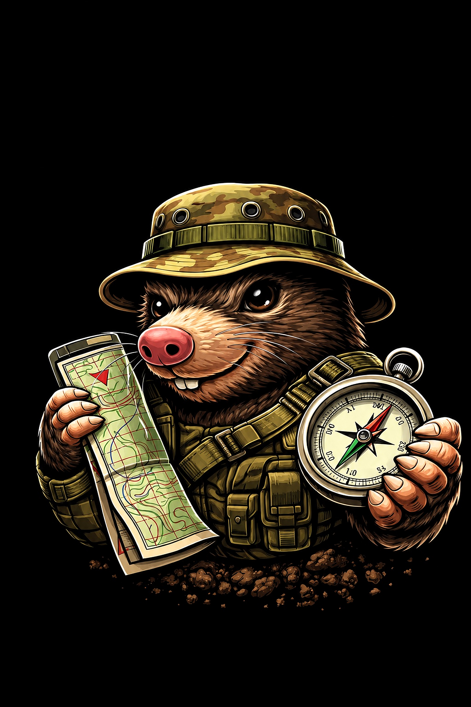

1. Configurar estructura
Pendiente de confirmar

Sigue el flujo en orden: primero estructura, después puntos y por último generación del paquete final.
MILITOPO es una herramienta para crear, organizar y generar recorridos topográficos a partir de puntos de control o balizas. Está pensada para preparar ejercicios, prácticas, competiciones o actividades de orientación de una forma rápida, clara y ordenada.
Su objetivo es facilitar toda la preparación del recorrido: ordenar los puntos, repartirlos de forma equilibrada y generar automáticamente la documentación necesaria para organizadores, balizas y participantes.
La aplicación se organiza mediante módulos y puntos. Cada recorrido pasa por un punto de cada módulo, lo que permite crear recorridos variados manteniendo una estructura lógica y equilibrada.
Los puntos siguen una identificación sencilla: P significa Punto, el primer número indica el módulo y el segundo número el punto dentro de ese módulo. Por ejemplo, P11 es el Punto 1 del Módulo 1 y P23 es el Punto 3 del Módulo 2.
La descripción indica qué representa ese punto o cómo reconocerlo en el terreno. Puede ser, por ejemplo: cota, collado, árbol, cruce o fuente. Así, cada punto queda definido por su identificador, su coordenada y su descripción.
MILITOPO permite configurar módulos y puntos, trabajar con coordenadas UTM o MGRS, editar puntos manualmente o desde el mapa, importar puntos desde archivos, generar recorridos automáticamente y obtener archivos listos para usar.
La aplicación se divide en tres pasos: configurar la estructura, editar los puntos y generar los recorridos.
MILITOPO crea un ZIP organizado con archivos para organizadores, balizas y participantes. Incluye recorridos, resultados, códigos, hojas de recorrido, puntos y otros archivos auxiliares para facilitar el trabajo en campo.
Permite ahorrar tiempo, reducir errores y dejar toda la actividad preparada antes de empezar. Convierte una lista de puntos en un sistema completo de recorridos ya organizado y listo para usar.
1. Entra en Topografía. Esta rama sirve para preparar recorridos topográficos con módulos, puntos, balizas, hojas, PDF y ZIP final.
2. Paso 1: configura la estructura. Elige cuántos módulos quieres, cuántos puntos tiene cada módulo y si vas a trabajar en UTM o MGRS. Después pulsa Confirmar y continuar.
3. Paso 2: mete los puntos. Puedes escribir las coordenadas a mano, importarlas desde CSV/Excel/GPX/KML o colocarlas con el mapa. Cada punto debe tener coordenada y descripción.
4. Revisa el tablero. Mira que los puntos estén completos. Si falta algo, arréglalo antes de seguir.
5. Paso 3: genera recorridos. Elige cuántos recorridos quieres crear en el desplegable y pulsa generar. La app reparte los puntos de forma automática.
6. Descarga el ZIP. Dentro tendrás carpetas para organizadores, balizas y participantes. Ese ZIP es lo que usarás para imprimir o llevar al ejercicio.